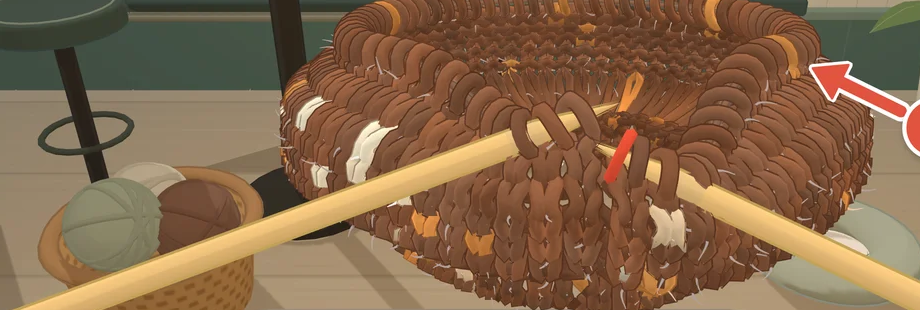
Thumb input, 3D needle motion
We translate 2D touch input into 3D needle motions such as inserting and wrapping. The fabric is computed with a stitch-level physics model, so tension and stretch stay in the finished piece.
Naroworks is a software developer and operator. We build and run Minou, a knitting app powered by our real-time knitting simulation and AI-driven character mapping.
See the workbench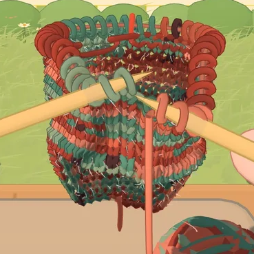
3D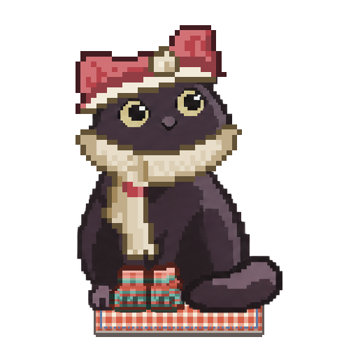
2DMinou brings the motions and sequence of real knitting to mobile. Hold the phone sideways and work the needles with your thumbs to finish scarves, hats and socks. Minou the cat wears each finished piece, and it joins your shelf.
Press and hold to undo a stitch.
Minou’s workbench runs on a knitting simulation engine we built in house and renders on the device in real time with three.js.

We translate 2D touch input into 3D needle motions such as inserting and wrapping. The fabric is computed with a stitch-level physics model, so tension and stretch stay in the finished piece.
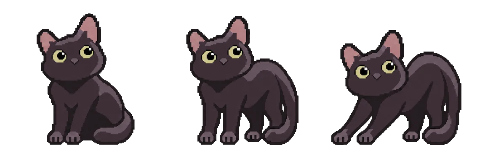
Minou is a pixel character drawn in 90 frames: 15 movements with six frames each. Every frame keeps the head, ears and paws on separate layers.
We convert each 3D piece rendered on the device into clothing for a 2D pixel character. Yarn colors and patterns carry over, down to the marks left by tension.
An AI vision model identifies the character’s position and body structure in every frame and maps each piece to the head, neck and paws. The clothes fit whether Minou sits, walks or sleeps. The mapping now covers all 90 frames.
Next is real-time tracking. We are extending the system so AI follows the character’s movement moment by moment and the clothes move with it.
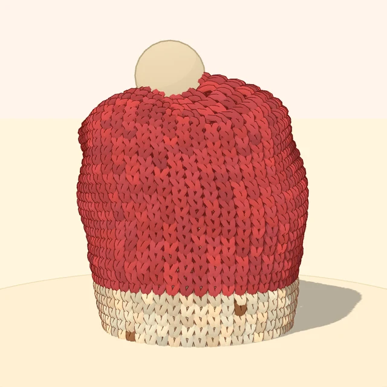
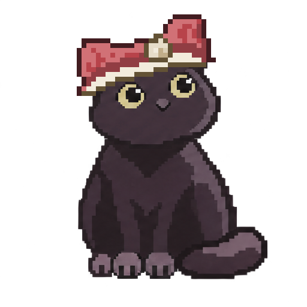
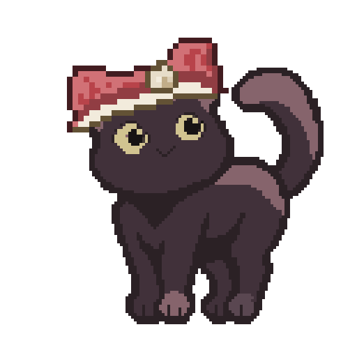
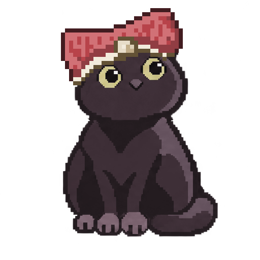
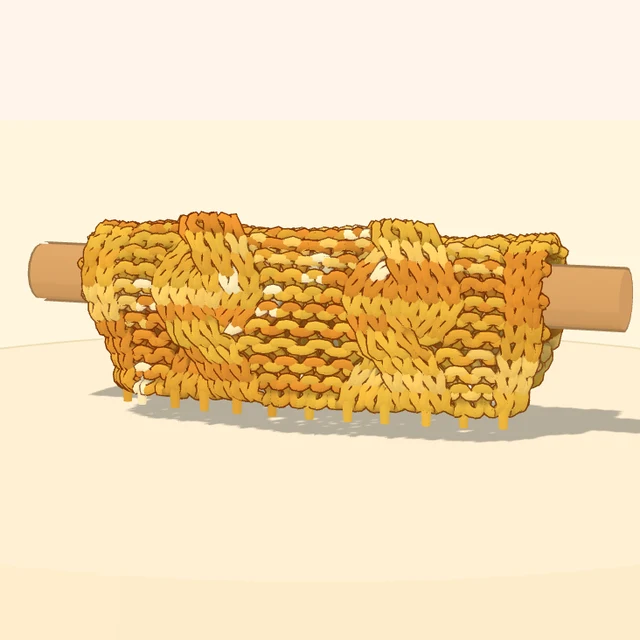
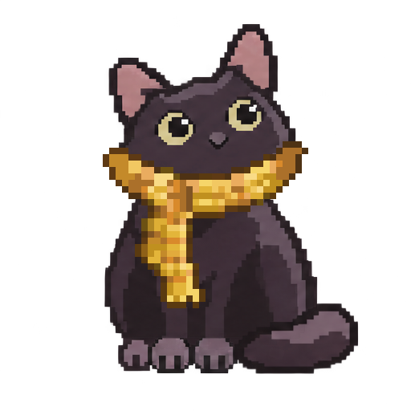
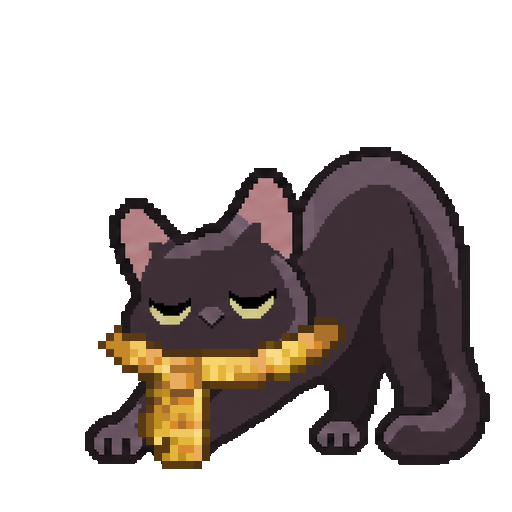
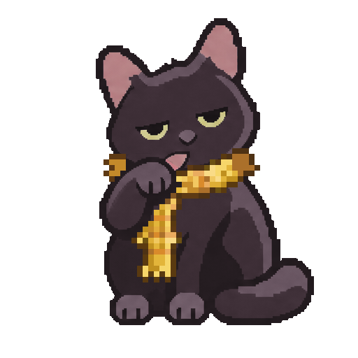
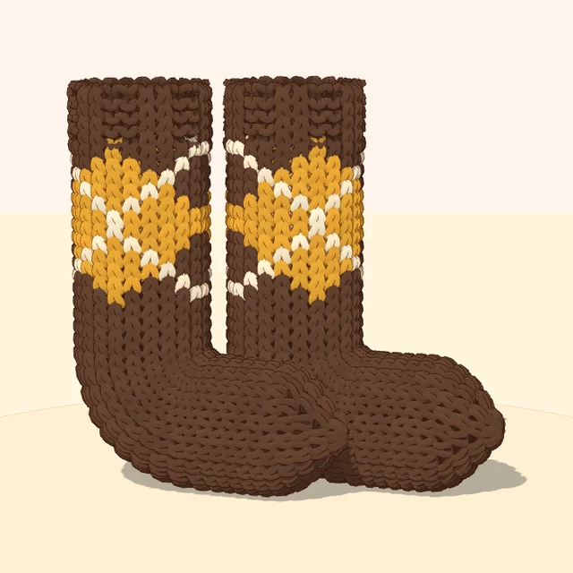
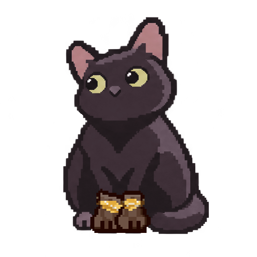
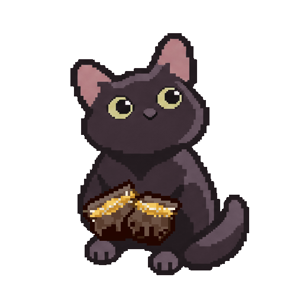
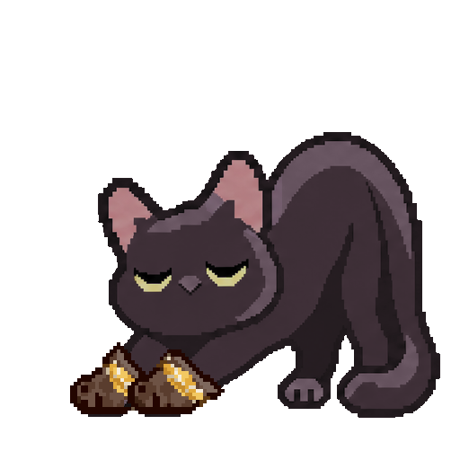
Founded in September 2026. We build and run our own products on real-time graphics and AI.